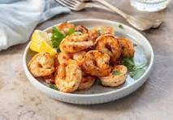

Garlic butter shrimp easy
HOME

Garlic butter shrimp is a quick and flavorful dish that combines juicy shrimp with rich, garlicky butter sauce. Cooked in just a few minutes, this dish is perfect as an appetizer, a main course with rice or pasta, or even as a topping for salads. The combination of butter, garlic, and a hint of lemon enhances the shrimp’s natural sweetness, while optional red pepper flakes add a mild kick. Simple yet delicious, this dish is a go-to for seafood lovers looking for a fast and satisfying meal.
- 1 pound (450g) shrimp, peeled and deveined
- 2 tablespoons butter
- 3 cloves garlic, minced
- 1 tablespoon lemon juice
- 1/2 teaspoon salt
- 1/4 teaspoon black pepper
- 1/2 teaspoon red pepper flakes (optional)
- 1 tablespoon chopped parsley
Now for the steps:
- Heat butter in a pan over medium heat.
- Add minced garlic and cook for 30 seconds until fragrant.
- Add shrimp, salt, black pepper, and red pepper flakes.
- Cook for 2-3 minutes per side until shrimp turns pink.
- Stir in lemon juice and parsley.
- Remove from heat and serve immediately.